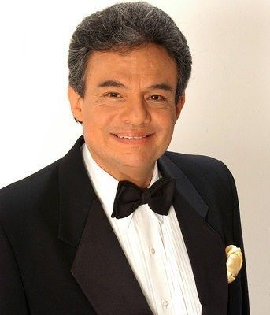

Nombre real: José Rómulo Sosa Ortiz
Nacimiento: 17 de febrero de 1948
Origen: Ciudad de México, México
Muerte: 28 de septiembre de 2019
Género: Balada romántica, bolero, pop latino
Ocupación: Cantante, actor, productor
José José, fue uno de los cantantes más emblemáticos y queridos de la música en español. Nacido el 17 de febrero de 1948 en la Ciudad de México, su voz inconfundible, llena de pasión y dramatismo, lo convirtió en un ícono de la balada romántica y en un referente indiscutible de la música popular.
Con una carrera que abarcó más de cinco décadas, José José conquistó los corazones de millones con éxitos como "El Triste", "Amar y Querer", "Gavilán o Paloma" y "Almohada", entre muchos otros. Su capacidad para transmitir emociones a través de su voz le valió el apodo de "El Príncipe de la Canción", un título que llevó con orgullo y que reflejaba su grandeza artística.
Más allá de su talento musical, su vida estuvo marcada por altibajos personales, luchas y superaciones, lo que añadió profundidad a su leyenda. José José no solo fue un cantante excepcional, sino también un símbolo de resiliencia y elegancia.
Este texto es un homenaje a su legado, una invitación a recordar su música y a celebrar al artista que, incluso después de su partida el 28 de septiembre de 2019, sigue vivo en cada nota que dejó grabada para la eternidad.
“Cuando pienses en abandonar, recuerda por qué empezaste”
"Prefiero mil veces una herida mortal… que un amor a medias"